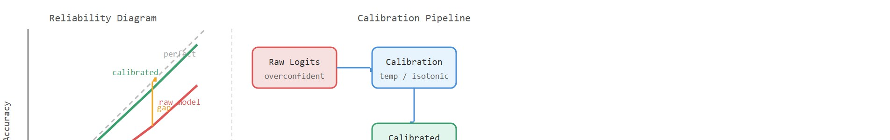
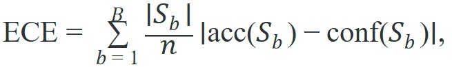

A robust robot is not the one that never sees surprise, it is the one that notices surprise early enough to act differently.
A Runtime Monitoring Engineer
A surgical robot rates every candidate incision at 91% confidence, yet only 62% of those incisions would hit the target. The threshold meant to halt the arm never fires, because the confidence score is always above it. The robot is not broken; it is miscalibrated. As embodied systems move from controlled labs into hospitals, warehouses, and public streets, the gap between stated confidence and actual accuracy becomes a safety variable. This section develops the tools to measure that gap, close it with temperature scaling and isotonic regression, and design runtime gates whose thresholds mean something.
Figure 53.2.1 sets the visual theme for this section: a confidence number is trustworthy only when it matches how often the prediction is actually right.
This section assumes familiarity with the disturbance taxonomy and failure modes introduced in section 53.1, particularly the distinction between sensor noise, covariate shift, and concept drift. The calibration tools developed here feed directly into section 53.3, where calibrated confidence scores become the basis for out-of-distribution detection thresholds, and into section 53.4, where they supply the uncertainty health signal that drives runtime state transitions.
A self-driving car's perception stack reports 98% confidence that the road ahead is clear. The bus full of passengers behind it trusts that number. The one time in fifty that the number is wrong is the only time that matters. Calibration is the discipline of making a 98% claim right 98 times out of 100, so that a brake can be wired to a confidence score. Model uncertainty and calibration is useful only when it distinguishes disturbance sources and ties them to specific corrective actions. Robustness is not one scalar, it is a map from perturbation class to degraded behavior, detection delay, and residual risk.
To see why calibration matters in practice: imagine a robot arm that assigns 0.92 confidence to every candidate grasp, but only 68% of those grasps actually succeed. A runtime gate set at a 0.85 threshold will never trigger, because the raw confidence is always above it regardless of true difficulty. The robot proceeds confidently into failure after failure. The issue is not that the model is wrong on average; it is that the confidence scale has decoupled from the empirical success rate, so no threshold can separate good grasps from bad ones. Calibration is the correction that re-couples the scale to reality, and this decoupling is called the confidence-accuracy gap.
A confidence score that cannot be trusted as a number is not a safety signal; it is a decoration on a threshold that will never mean what it says.

In embodied AI this gap carries physical consequences. A robot arm acting on miscalibrated scores cannot self-correct through repeated attempts: each failed grasp risks damaging fragile parts, displacing the target object, or exhausting a narrow time window. On legged platforms, a miscalibrated terrain-safety score can commit the robot to a foothold from which it cannot recover. The physical world does not allow confidence values to correct themselves through backpropagation.
The gap arises because training pushes neural networks to maximize class separation, not probability accuracy. A sigmoid or softmax output that ranks options reliably can still saturate near 0 or 1, because cross-entropy loss rewards correct orderings, not correct magnitudes. Larger, deeper networks amplify this effect (Guo et al., 2017). Temperature scaling divides the logits (the raw pre-softmax scores a network emits for each class, where the softmax is the function that turns those scores into a probability distribution summing to one) by a learned scalar before the softmax. This compresses overconfident outputs back toward the empirical success rate without changing the ranking. A second post-hoc method, isotonic regression (a technique that fits the best-fitting non-decreasing curve through a set of points, so confidence values can only be remapped, never reordered), fits a free-form monotonic mapping from raw confidence to calibrated probability. It can therefore correct arbitrary distortions in the confidence scale rather than just a single global temperature, at the cost of needing more held-out data to fit reliably. Figure 53.2.2 contrasts a raw overconfident model against its calibrated counterpart and traces the pipeline that either map slots into.
A standard calibration statistic is the expected calibration error (ECE)

where $S_b$ is the set of predictions whose confidence falls in bin $b$. In embodied systems, calibration should typically be evaluated on action-relevant predictions, not only class labels, since a class label with no control effect can stay miscalibrated without changing robot behavior.Before applying either fix, note what each depends on: temperature scaling needs only a single scalar fit on held-out data, while isotonic regression needs a larger held-out set to fit a free-form monotonic curve reliably. ECE is the diagnostic that tells you whether either correction is needed at all, so in practice teams compute ECE first, then choose a calibration map, then re-measure ECE on a separate shifted panel to confirm the fix held.
So far: miscalibration has physical consequences on embodied systems, it arises because cross-entropy training rewards ranking over probability accuracy, and two post-hoc fixes (temperature scaling, isotonic regression) plus one diagnostic (ECE) are the toolkit for measuring and closing that gap.
Think of a kitchen scale that always shows items in the correct order of heaviness (the bag of flour is heavier than the apple) but whose dial reads 30% too high across the board. The ranking is perfect, yet every recipe that calls for "250 g of flour" will be wrong because the printed number cannot be trusted as an absolute quantity. Cross-entropy training gives a neural network that same property: it learns to rank options reliably, but the softmax output saturates toward 0 or 1 because the loss only rewards putting the correct option on top, not placing it at the right numerical probability. Calibration is the correction that re-marks the dial so the number you read actually matches the weight in the bowl.
An uncertainty signal can have the right ordering but the wrong scale. Calibration is what makes the scale actionable for a threshold, an intervention rule, or a planner cost.
A manipulation policy may be good at ranking candidate grasps yet still overclaim 0.95 confidence on cases that succeed only 0.70 of the time. A runtime gate built on that confidence will intervene too late.
predictions = [
{"confidence": 0.9, "correct": 1},
{"confidence": 0.8, "correct": 1},
{"confidence": 0.8, "correct": 0},
{"confidence": 0.6, "correct": 1},
{"confidence": 0.55, "correct": 0},
{"confidence": 0.95, "correct": 1},
]
def binned_ece(preds, n_bins=10):
"""Proper binned ECE: sum over bins of (n_b / N) * |accuracy_b - confidence_b|."""
N = len(preds)
edges = [i / n_bins for i in range(n_bins + 1)]
ece = 0.0
for i in range(n_bins):
lo, hi = edges[i], edges[i + 1]
in_bin = [p for p in preds if lo < p["confidence"] <= hi or (i == 0 and p["confidence"] == 0.0)]
if not in_bin:
continue
n_b = len(in_bin)
acc_b = sum(p["correct"] for p in in_bin) / n_b
conf_b = sum(p["confidence"] for p in in_bin) / n_b
ece += (n_b / N) * abs(acc_b - conf_b)
return ece
ece = binned_ece(predictions)
print({"n_predictions": len(predictions), "binned_ece": round(ece, 4)}){'n_predictions': 6, 'binned_ece': 0.15}binned_ece function partitions six grasp predictions into confidence bins and returns the expected calibration error, the minimal signal needed before choosing a runtime confidence threshold.Computing ECE tells you the scale is trustworthy on average, but it does not by itself pick a threshold. Once the confidence map is calibrated, choose the runtime gate threshold by walking the reliability bins and selecting the lowest calibrated confidence value whose bin accuracy still meets the task's required success rate; for example, if the safety budget for a grasp attempt requires at least 90% empirical success, scan the calibrated bins from high to low confidence and take the first bin boundary where accuracy drops below 0.90 as the gate threshold. Because the confidence is now calibrated, that threshold value means what it says: candidates below it fail at least as often as the budget allows, so the gate is not an arbitrary cutoff but a direct readout of an acceptable-risk boundary.
Trace temperature scaling on a single 3-class prediction. The raw logits are $z = [4.0, 1.0, 0.5]$. Softmax of the raw logits gives $e^{4.0}=54.6$, $e^{1.0}=2.72$, $e^{0.5}=1.65$, summing to $58.97$, so the top probability is $54.6/58.97 = 0.926$: the model claims 92.6% confidence. Suppose validation says this confidence level is empirically correct only 70% of the time, and fitting on held-out data yields temperature $T = 2.0$. Now divide every logit by $T$: $z/T = [2.0, 0.5, 0.25]$. Re-exponentiate: $e^{2.0}=7.39$, $e^{0.5}=1.65$, $e^{0.25}=1.28$, summing to $10.32$. The new top probability is $7.39/10.32 = 0.716$: the calibrated confidence drops to 71.6%, now matching the empirical 70% success rate. Note the ranking never changed (class 0 still wins), only the magnitude was compressed toward reality. A runtime gate set at 0.85 would have stayed silent on the raw 0.926 score but correctly fires on the calibrated 0.716 score.
Expected output: The small gap here suggests the average scale is close, but a real evaluation would still inspect bins because cancellation can hide local miscalibration. Calibration is about the full reliability shape, not only the mean.
On a Franka Panda manipulation stack, Torchmetrics computes binned ECE inside the PyTorch evaluation loop that replays logged grasp episodes; scikit-learn's isotonic regression then fits the calibration map on 500 held-out grasps from the target bin before any threshold is written into the ROS 2 action server. MAPIE-style conformal wrappers (conformal prediction is a distribution-free method that turns a point prediction into a set of candidate outputs guaranteed to contain the true answer at a user-chosen rate) extend this to coverage-guaranteed abstention: if the conformal set for a push primitive contains more than one action candidate, the robot returns to a safe home pose rather than committing. On a Boston Dynamics Spot inspection route, the same pipeline runs at 10 Hz against the onboard perception stack, where a 50 ms calibration-lookup latency is the accepted budget before the navigation costmap is updated.
Concrete stack anchors for this chapter include PyTorch or JAX evaluation loops for saving logits and uncertainty heads, OpenCV or Open3D replay tools for checking perception-linked failures, Torchmetrics and scikit-learn for calibration analysis, MAPIE or related conformal wrappers for thresholding, Weights & Biases or TensorBoard dashboards for reliability diagrams, and ROS 2 diagnostics when the calibrated signal gates a real runtime action.
| Tool | Role | Audit Question |
|---|---|---|
| Torchmetrics | Fast ECE, binning, and confidence summaries inside PyTorch evaluation loops. | Is the metric attached to the prediction that actually changes the robot's action? |
| scikit-learn | Calibration curves, isotonic regression, and threshold sweeps. | Was the calibration split frozen before deployment outcomes were inspected? |
| MAPIE-style conformal wrappers | Coverage-style intervals and abstention sets. | Does coverage remain acceptable on the shifted panel, not only on the clean split? |
These tool anchors are not hypothetical conveniences; the same calibration gaps they measure have already surfaced in production fleets. Waymo's public safety reports (2020 onward) suggest raw perception confidence is typically overconfident on rare classes such as cyclists in low light, prompting engineers to recalibrate against field outcomes before gating disengagement. RT-2 (Brohan et al., 2023) reported a similar pattern in tabletop manipulation: it predicted 0.9+ success where the new environment delivered closer to 0.55, a gap large enough to invalidate a threshold-based safety monitor unless teams fit isotonic regression on a held-out set from the target domain. Both cases share one structure: the model ranks options correctly, but its absolute confidence scale is wrong, so any fixed threshold either fires constantly or never fires.
In embodied systems, calibration must be tied to consequences. A poorly calibrated collision predictor and a poorly calibrated object classifier are not equally serious if only one gates a safety-critical maneuver. In practice, teams often compare temperature scaling, isotonic regression, and conformal intervals on the exact signal that drives a stop, reroute, or human-review threshold.
The implementation contract is simple: the confidence value in the PyTorch or JAX tensor must be the same signal logged in the replay artifact, plotted in Weights & Biases or TensorBoard, and consumed by the ROS 2 gate. A calibration curve that is detached from the deployed threshold is analysis theater, not safety evidence.
Keeping that single signal consistent across the pipeline is necessary but not sufficient, because where you fit the calibration map matters as much as which signal you fit it on. A frequent failure is to calibrate on clean validation data and deploy on shifted scenes. The confidence scale then looks disciplined in the notebook and collapses in the field.
When using scikit-learn's CalibratedClassifierCV, the default cv='prefit' path fits the calibration map on whatever split you pass in, but the default cv=5 path fits entirely on training folds, so the resulting reliability curve is measured on the same distribution the model already saw. Always construct a separate calibration split drawn from target-domain episodes, pass it via cv='prefit', and freeze that split before inspecting outcomes. If you are using MAPIE, prefer SplitConformalClassifier over cross-conformal variants for deployment calibration: cross-conformal aggregates across folds from the training domain and will report optimistic coverage on any shifted scene that does not appear in those folds.
Calibrating on your clean lab dataset and then deploying in the wild is a bit like rehearsing a speech in a quiet room and then discovering the venue is a busy airport: everything was perfectly tuned to conditions that no longer exist. The confidence score arrives at the gate looking immaculate and is immediately wrong.
Grasp confidence calibrator (beginner, weekend): Using a Gymnasium pick-and-place environment with MuJoCo (or PyBullet as of 2022, though MuJoCo is now the standard backend), log raw softmax confidence and binary grasp success over 500 rollouts, then fit temperature scaling with scikit-learn and plot the before/after reliability diagram to see the gap close. The key challenge is constructing a clean calibration split that does not overlap the training episodes so the corrected scale generalises rather than just memorising the training distribution.
Runtime uncertainty gate for a manipulation policy (intermediate, 1-2 weeks): Wrap a LeRobot or ROS2-connected Franka policy with a calibrated abstention layer that publishes a safe_to_execute topic: if the conformal prediction set for the next action contains more than one candidate, the gate sends the arm to a home pose instead of committing. The key challenge is keeping the calibration map consistent across sim-to-real domain shift, which requires collecting a held-out calibration set from real-robot replays rather than from simulation alone.
This section connects to Section 53.3 on out-of-distribution (OOD) detection and Section 54.4 on shielded policies, where calibrated thresholds become actual intervention logic.
Log confidence and outcome for one embodied prediction task, compute a reliability diagram, then decide whether you trust a threshold to trigger degraded mode or human review.
Do not calibrate confidence on a proxy metric that the action policy never uses. The only calibration that matters is the calibration of the signal tied to a real decision.
A common assumption is that a model with high classification accuracy is also well-calibrated, treating accuracy and calibration as the same property. They are not. A model can rank options correctly and achieve 95% accuracy while assigning 0.95 confidence to predictions that succeed only 65% of the time. In embodied AI this matters because runtime safety gates are triggered by the absolute confidence value, not by rankings: a miscalibrated but accurate model will still have a confidence scale that renders any fixed threshold either always active or never active. The correct mental model is that accuracy measures whether the top-ranked prediction is right, while calibration measures whether the stated probability matches the empirical frequency, and only the latter property makes a threshold meaningful for halting or rerouting a physical agent.
For a self-driving perception stack, calibration may matter most for occupancy or collision probability, not for semantic class labels that have no immediate control effect.
Tesla's Autopilot occupancy network outputs per-voxel occupancy probabilities that gate braking and lane decisions, so its raw confidences are recalibrated against logged fleet outcomes before any threshold is trusted. Because the same scene type can be over- or under-represented across millions of vehicles, the calibration map is refit per shadow-mode deployment rather than once at training time, keeping the confidence scale aligned with real collision frequencies instead of clean validation data.
Conformal prediction for embodied action sequences (2024-2026). Standard ECE calibration is per-step, but robot tasks unfold over horizons of tens to hundreds of steps. Sequence-level conformal methods that guarantee coverage over entire trajectory segments, rather than individual predictions, are an active area. The CCCP framework (Lindemann et al., 2024, "Conformal Prediction for STL Runtime Verification of Deep Neural Networks") extends split conformal guarantees to temporal logic specifications, giving a mathematically grounded way to certify that a manipulation sequence meets a safety specification with a user-chosen coverage level. The open problem is how to maintain valid coverage when the calibration set and deployment distribution shift simultaneously, as happens in sim-to-real transfer.
How many of the calibration tools available today were designed for single-step predictions? The great majority of the widely used ones. Yet a manipulation sequence can span 50 to 200 action steps, and a per-step ECE of just 0.05 can compound into a coverage gap that invalidates the safety certificate long before the task completes. As an illustration of that compounding, assuming independence across steps a 95% per-step coverage guarantee degrades to roughly 7% coverage after 200 steps (0.95200 ≈ 0.07), meaning the "safe" certificate would be violated on most rollouts by the time the robot finishes a standard pick-and-place horizon; real trajectories have correlated errors, so the actual degradation will typically differ from this independence bound but the direction (sharp decay with horizon length) still holds.
Calibration of diffusion-based and flow-matching policies (2024-2026). Imitation learning policies based on diffusion (e.g., Diffusion Policy, Chi et al., 2023 / extended benchmarks 2024-2025) and flow matching (Pi0, Black et al., 2024) output action distributions rather than point estimates, so the standard scalar confidence framing no longer applies. Research groups at Stanford, Berkeley, and CMU are developing density-calibration metrics that ask whether the probability mass a diffusion policy assigns to a region of action space matches the empirical success rate of actions sampled from that region. No consensus benchmark or toolchain has stabilized yet, making this an approachable entry point for a PhD project.
Foundation-model uncertainty quantification under distribution shift (2024-2026). Large vision-language-action models such as OpenVLA (Kim et al., 2024) inherit calibration from internet-scale pretraining but are fine-tuned on narrow robot datasets. Recent work (e.g., RT-2-X and its successors) shows that fine-tuning can sharply degrade calibration on out-of-distribution objects even when task accuracy improves. Google DeepMind and Toyota Research Institute have published internal evaluations showing confidence-accuracy gaps above 0.30 on novel object classes after fine-tuning, motivating lightweight post-hoc recalibration pipelines that can run on-robot without retraining the full backbone.
Open problem for PhD students. There is currently no agreed protocol for evaluating sequence-level calibration in long-horizon manipulation: how many steps form a meaningful calibration window, how to handle variable-length tasks, and how to ensure the calibration split does not leak future observations into the calibration map. A student who formalizes this evaluation protocol and runs it across three or more open manipulation benchmarks (e.g., LIBERO, RLBench, DROID) would fill a genuine gap in the field.
Can you explain why an accurate but miscalibrated confidence head can still be dangerous in deployment? If not, connect the threshold choice to a missed or false intervention.
Calibration turns uncertainty from a descriptive score into a decision-support signal that can safely trigger thresholds and fallbacks.
Take one model output from your own stack and define how you would test whether its confidence is calibrated enough to drive a runtime threshold.
Ovadia, Y. et al. "Can You Trust Your Model’s Uncertainty? Evaluating Predictive Uncertainty Under Dataset Shift." (2019). https://arxiv.org/abs/1906.02530
Calibration under shift is the real embodied challenge.
Guo, C. et al. "On Calibration of Modern Neural Networks." (2017). https://arxiv.org/abs/1706.04599
A standard reference for calibration evaluation and post-hoc adjustment.
Section 53.3 continues by asking how to detect states that should not be trusted at all because they lie outside the supported distribution.